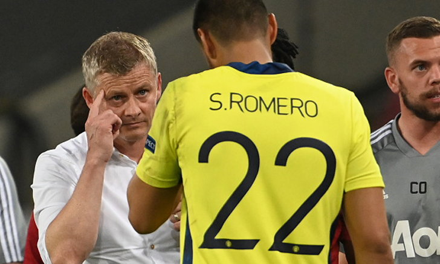
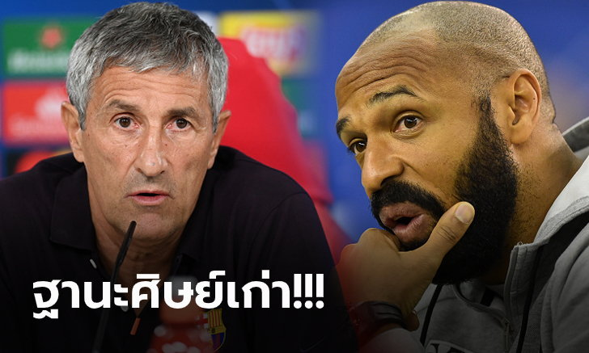
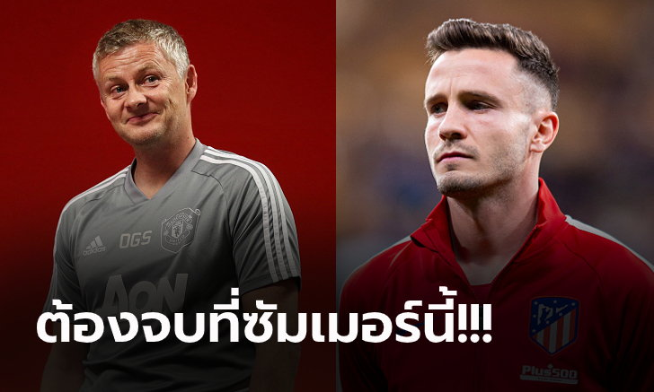
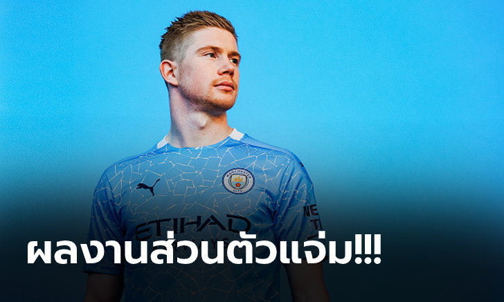

ไขข้อสงสัย! "โซลชา" ออกโรงชี้ทำไมเลือก "เด เคอา" ลงเฝ้าเสาเกมพบ เซบีย่า
โอเล่ กุนนาร์ โซลชา ผู้จัดการทีม แมนฯ ยูไนเต็ด สโมสรในศึกพรีเมียร์ลีก อังกฤษ ออกมาชี้แจงสาเหตุที่ตัดสินใจเลือกใช้ ดาบิด เด เคอา ผู้รักษาประตูทีมชาติสเปน ลงทำหน้าที่ในเกมที่แพ้ให้กับ เซบีย่า 1-2 จนเป็นเหตุให้กระเด็นตกรอบในศึกยูโรปา ลีก รอบรองฯ เมื่อคืนวันอาทิตย์ที่ 16 สิงหาคม ที่ผ่านมา
โดยที่ผ่านมาในการแข่งขันรายการนี้ "ปีศาจแดง" มักจะเลือกใช้ เซร์คิโอ โรเมโร่ นายด่านชาวอาร์เจนไตน์ ลงเฝ้าเสาอย่างต่อเนื่อง แต่กับเกมเมื่อคืนที่ผ่านมากลับเลือกใช้ นายด่านสเปน ลงทำหน้าที่แทน
"ส่วนในรายของ ดาบิด เด เคอา เขาทำผลงานในช่วงฝึกซ้อมได้ดีมากๆ แถมผลงานที่เขาเคยเจอกับทีมจากสเปน (เซบีย่า) เขาก็โชว์ฟอร์มเซฟสวยๆ ได้หลายครั้ง แน่นอน เซร์คิโอ ก็ผิดหวังแหละ แต่เขามีความเป็นมืออาชีพพอ" โอเล่ กล่าว
มีชื่อด้วย! "อองรี" โผล่ตัวเต็งคุมทัพบาร์เซโลน่าหากปลด "เซเตียน" พ้นตำแหน่ง
ดิอาริโอ สปอร์ต สื่อใน สเปน รายงานว่า บาร์เซโลน่า ลิสต์ชื่อ เธียร์รี อองรี กุนซือ มอนทรีอัล อิมแพ็คท์ แห่งศึก เมเจอร์ลีก ซอคเกอร์ สหรัฐอเมริกา เป็นหนึ่งในแคนดิเดทนายใหญ่คนใหม่ร่วมกับอีก 3 ผู้จัดการทีมระดับท็อปแทนที่ กิเก้ เซเตียน หลังทัพ อาซูลกราน่า ร่วงตกรอบ ยูฟ่า แชมเปี้ยนส์ลีก จากน้ำมือของ บาเยิร์น มิวนิค ด้วยสกอร์มโหฬาร 2-8 เมื่อคืนวันศุกร์ที่ผ่านมา
สื่อแดนกระทิงดุ ชี้ว่า บาร์ซ่า อยู่ระหว่างนับถอยหลังการแยกทาง กีเก้ เซเตียน หลังผลการแข่งขันที่น่าอับอาย โดยอดีตแข้ง เจ้าบุญทุ่ม อย่าง อองรี มีชื่อเป็นหนึ่งในเป้าหมายของพวกเขาร่วมกับบิ๊กเนมอย่าง เมาริซิโอ โปเช็ตติโน่, เมาริซิโอ อัลเลกรี และ โรนัลด์ คูมัน
โดย อองรี นับเป็นหนึ่งในแข้ง บาร์ซ่า ชุดที่ประสบความสำเร็จมากที่สุดในประวัติศาสตร์ของพวกเขาจากผลงาน 49 ประตู 27 แอสซิสต์กับการลงสนามทั้งสิ้น 121 นัดให้กับทีมหลังย้ายจาก อาร์เซน่อล ไปเล่นในถิ่น คัมป์นู เมื่อปี 2006
อย่างไรก็ตาม เจ้าตัวยังไม่ได้พิสูจน์ตนเองในเส้นทางคุมทีมบนเวทีฟุตบอลระดับสูงนักเมื่อเพิ่งเคยผ่านงานผู้ช่วยกุนซือของ โรแบร์โต้ มาร์ติเนซ ในทีมชาติ เบลเยียม ก่อนที่จะล้มเหลวอย่างสิ้นเชิงกับ โมนาโก ในเวลาต่อมาเมื่อพาทีมเก็บชัยชนะได้เพียง 4 นัดจากทั้งสิ้น 20 เกม
ทั้งนี้ อองรี ยังเพิ่งพา มอนเทรอัล คว้าชัยได้เพียง 1 นัดเท่านั้นจากทั้งหมด 6 เกมล่าสุดที่เขาคุมทัพ
ให้มากสุดเท่านี้! สื่อกระพือ แมนฯ ยูไนเต็ด พร้อมปิดดีลกระชาก "ซาอูล" ร่วมทัพ
แมนเชสเตอร์ ยูไนเต็ด ทีมดังแห่งศึกพรีเมียร์ลีก อังกฤษ ตกเป็นข่าวพร้อมยื่นข้อเสนอมูลค่าแตะหลัก 70 ล้านปอนด์ให้กับ แอตเลติโก มาดริด เพื่อคว้าตัว ซาอูล ญีเกซ มาร่วมรัง โอลด์ แทรฟฟอร์ด ใน ตลาดซื้อขายนักเตะ ซัมเมอร์นี้ตามการรายงานจาก เดลี่ สตาร์ สื่อแดนผู้ดี
ญีเกซ มีสถานะเป็นแข้งคีย์แมนในทีมของ ดิเอโก้ ซิเมโอเน นับตั้งแต่ฤดูกาล 2013/14 เป็นต้นมาโดยเป็นผลผลิตจากสถาบันลูกหนังของทัพตราหมี หลังย้ายจากทีมเยาวชนของ เรอัล มาดริด มาร่วมทัพเมื่อปี 2006
สื่อดังกล่าวรายงานว่า ปีศาจแดง พร้อมที่จะหวนเดินหน้าในดีลดังกล่าวอีกครั้งหลังจากที่ แอต. มาดริด ร่วงตกรอบ 8 ทีมสุดท้ายศึก ยูฟ่า แชมเปี้ยนส์ลีก จากการพ่ายแพ้ต่อ แอร์เบ ไลป์ซิก 2-1 เมื่อคืนวันพฤหัสบดีที่ผ่านมา โดยพร้อมที่จะยื่นค่าเหนื่อยให้กับมิดฟิลด์ทีมชาติ สเปน รายนี้สูงถึง 150,000 ปอนด์ต่อสัปดาห์
ทั้งนี้ ซาอูล โชว์ฟอร์มได้อย่างยอดเยี่ยมด้วยการลงเล่นให้กับ แอตเลติโก มาดริด ในฤดูกาลนี้ไปทั้งสิ้น 47 นัดเมื่อรวมทุกรายการ และทำได้ 7 ประตูให้กับสโมสรต้นสังกัด
ไม่ถึงแชมป์ไม่เกี่ยว! "เดอ บรอยน์" ผงาดซิวแข้งยอดเยี่ยมแห่งปีพรีเมียร์ลีก
เควิน เดอ บรอยน์ มิดฟิลด์ตัวเก่งของ แมนเชสเตอร์ ซิตี้ สโมสรแห่งศึกพรีเมียร์ลีก อังกฤษ คว้ารางวัลนักเตะยอดเยี่ยม พรีเมียร์ลีก ประจำฤดูกาล 2019/20 จากการประกาศของฝ่ายจัด เมื่อวันอาทิตย์ที่ 16 สิงหาคม ที่ผ่านมา
โดย ดาวเตะทีมชาติเบลเยียม ที่แม้จะไม่สามารถพาทีมป้องกันแชมป์ไว้ได้ แต่ผลงานส่วนตัวต้องบอกว่ายอดเยี่ยมเอามากๆ เมื่อจ่ายบอลให้เพื่อนทำประตูไปได้มากถึง 20 แอสซิสต์
ส่งผลให้ได้รับคะแนนโหวตจากแฟนบอล และคณะกรรมการเข้ามาเป็นอันดับหนึ่ง เอาชนะทั้ง จอร์แดน เฮนเดอร์สัน, เทรนท์ อเล็กซานเดอร์-อาร์โนลด์, ซาดิโอ มาเน่ (ลิเวอรพูล), แดนนี่ อิงส์ (เซาธ์แฮมป์ตัน), นิค โป๊ป (เบิร์นลี่ย์) และ เจมี่ วาร์ดี้ (เลสเตอร์ ซิตี้)
ทำให้เจ้าตัวผงาดคว้ารางวัลที่สองของปีนี้ หลังก่อนหน้านี้สามารถคว้ารางวัลนักฟุตบอลยอดเยี่ยมแห่งปีจาก บีบีซี สื่อดังของประเทศอังกฤษ มาครองแล้ว
สรุปรางวัลยอดเยี่ยมของ พรีเมียร์ลีก ฤดูกาล 2019/20
ผู้จัดการทีมยอดเยี่ยม: เยอร์เก้น คล็อปป์ (ลิเวอร์พูล)
นักเตะยอดเยี่ยม: เควิน เดอ บรอยน์ (แมนฯ ซิตี้)
ดาวรุ่งยอดเยี่ยม: เทรนท์ อเล็กซานเดอร์-อาร์โนลด์ (ลิเวอร์พูล)
ประตูยอดเยี่ยม: : ซน ฮึง-มิน (ท็อตแน่ม ฮ็อทสเปอร์) * นัดที่ยิงใส่ เบิร์นลี่ย์